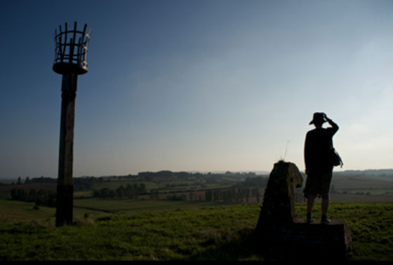

https://youtu.be/yvvpUwCHb6c
비디오 보다가 빵터진부분
Korean mature people dress more colourfully than mature people in the UK.
England people go to the countryside to be alone and escape.
In Seoul, it is more of a social event
런던에서 사람에 시달리다가 휴가때 무조건 외곽지역으로 나가서 사람하나 없는 벌판 누비던게 생각나서 격하게 공감했습니다 ㅋㅋㅋ

대충 요런 상황 ㅋㅋㅋㅋ // Winchelsea, East Sussex
전에 M군(part time rock star from UK)이 한쿡 놀러와서 서울 도시 사방에서 산을 볼 수 있다는것에 매우 놀라워 하면서
등산을 꼭 해보고 싶다고 했었는데 다음 한국 방문때는 한번 안내해줘야겠어요
(물론 난 입구 근처 커피숍에서 기다릴거임 ㅋㅋㅋㅋ 커피마시믄서 ㅋㅋ <-야외활동/대자연 이런거 관심 없는인간 ㅋㅋ)